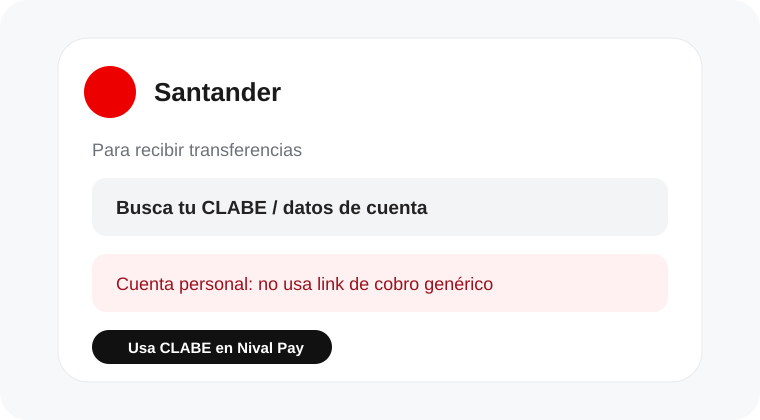
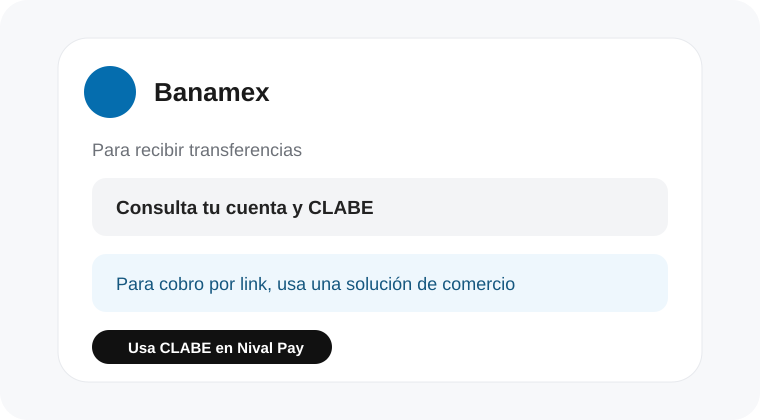
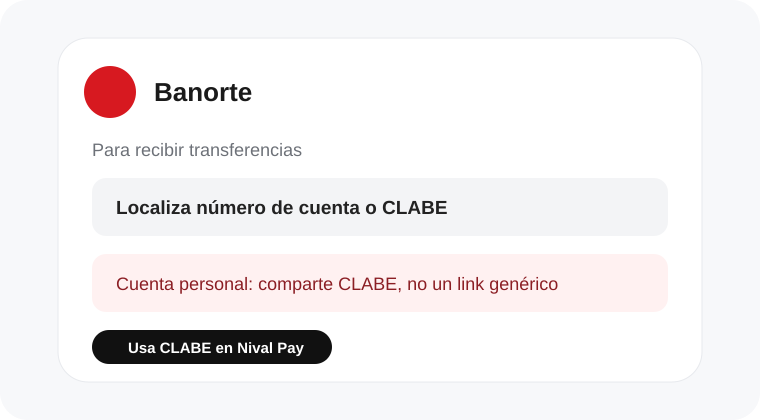
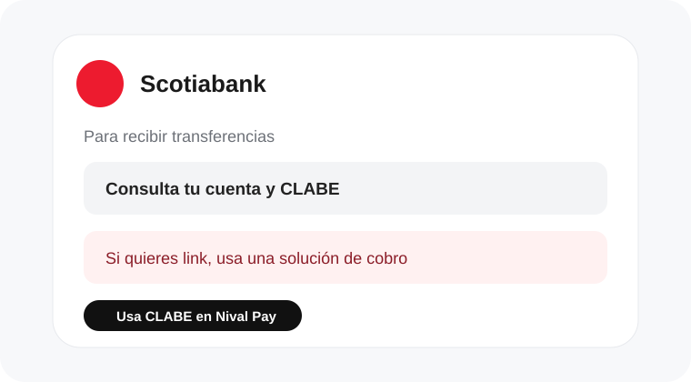
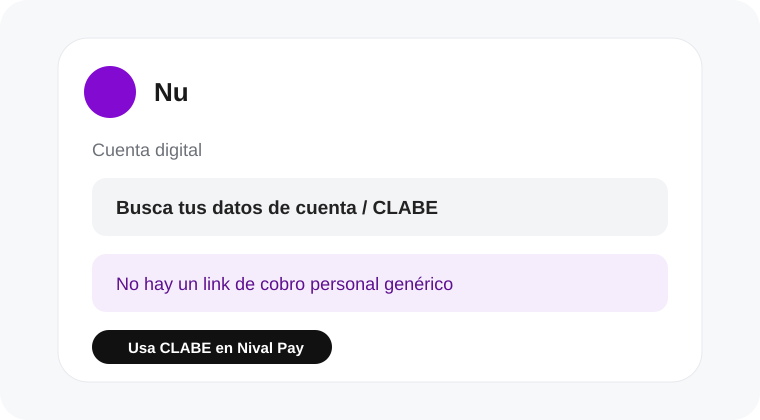

Acerca la tarjeta
Tu cliente acerca su celular a la tarjeta NFC.
Tarjeta NFC + página de pago
Una tarjeta NFC que lleva a tus clientes directamente a tus datos bancarios y a tu link de pago. Nada de buscar la CLABE ni mandarla por WhatsApp.
Así de simple
Tu cliente acerca su celular a la tarjeta NFC.
Ve tus datos bancarios y tu enlace de pago al instante.
Copia la CLABE o abre directamente el método de pago.
Bancos y cuentas comunes en México
No todos los bancos ofrecen un link de cobro personal. Cuando no existe, Nival Pay muestra tu CLABE para que el cliente transfiera.







Si tu banco no aparece, Nival Pay también puede funcionar con banco, beneficiario y CLABE.
Elige cómo quieres pagar
💳 Pagar ahora012345678901234567Verifica los datos del beneficiario antes de realizar una transferencia.
Powered by NIVAL TECH
DEMO — datos ficticiosNival Pay
Una tarjeta física. Una página sencilla. Tus datos listos para cobrar.
Quiero mi tarjeta